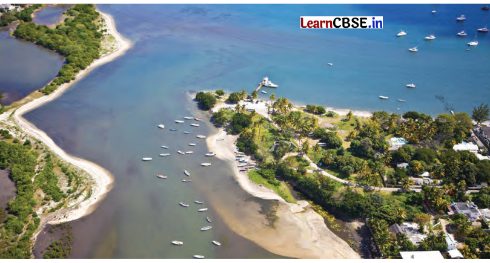
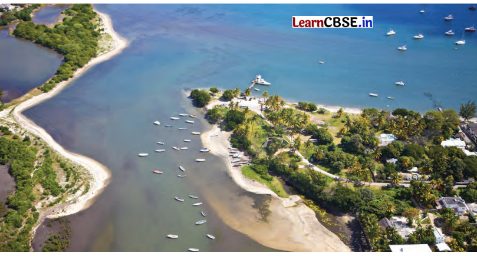
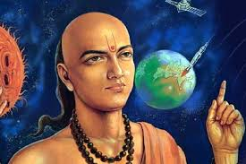
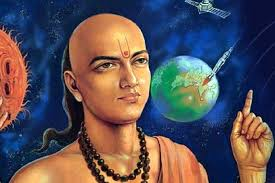

In a small and colourful room in Moti Vavdi in Bhavnagar, Gujarat there is a lot to see.The room is bright and filled with many beautiful things like cushions, bedcovers, and pillows. The person who makes these beautiful things is Ila Sachani.She is very skilled at a type of embroidery called Kathiawar embroidery.This kind of embroidery needs a lot of practice and talent. Ila's story begins in a quiet place called Amreli, Gujarat.Ila's life was not easy because she was born with a condition that made her hands hang loosely by her sides.She wanted to hold a piece of chalk like the other children and draw pictures on a slate, but she could not.Even though ila faced this big challenge, her mother and grandmother were very supportive.Both of them were experts in the traditional art of Kathiawar embroidery.They found a way for ila to create lovely patterns using her feet instead of her hands.Ila's parents also helped her learn how to do daily tasks with her legs, like eating her food and combing her hair.At first, threading a needle was a big challenge for ila.But she did not give up, and with practice, she became very good at it at a young age.She learned styles from other places too, like Kachhi, Kashmiri, and Luckhnawi embroidery.Each of these styles had it's own unique beauty, and ila was excited to learn them all. As ila practiced her embroidery, it became a way for her to express herself.At first, she made beautiful designs just for her family and friends.They were amazed by her talent and talked about her wonderful work to others.Soon, people in the village started to notice ila's special skill.Eventually, word of ila's talent reached the Government office in Surat.They decided to show some of her work at a big exhibition in the state.At the exhibition,many people saw the amazing beauty of her creations, and they were eager to buy her work.Ila was no longer a hidden talent; she was becoming famous! With this new popularity, Ila started to participate in more exhibitions.Not just in her state, but also at the national level.Ila sachani, who once was just a farmers daughter facing a big challenge, worked very hard and became a celebrated artist.She even received the prestigious President's Medal, which was a big honour.The most important change for ila was the New Sence of indipendence she gained through her skills.More than just making money ila, found joy in doing what she loved.She showed everyone that challenges can be turned into victories with focus, hard work, and a positive attitude.Ila never gave up, and this attitude helped her achieve her dreams.Ila's embroidery, made with her feet, is a powerful reminder that art can overcome physical limitations and touch people's hearts.Her story teaches us that no matter what challenges we face in life, we can always find a way to suceed if we work hard and believe in ourselfs.


 

 

India has made significant strides in satellite technology, with key projects like GSAT (communication satellites) and NAVIC
In ancient times, India attracted travelers from across the world due to its economic prosperity, cultural richness, spiritual significance, and intellectual achievements. Below is a concise
explanation of the motivations behind travel to India, along with the geographical routes that facilitated this movement.
1.Motivations for Traveling to India in Ancient Times
a.Trade and Economic Opportunities
India was a key player in global trade, thanks to its rich resources like spices, textiles, and gems. Indian goods were highly valued in regions such as Rome, Persia, and Southeast Asia. India was
part of both the Silk Road and the Maritime Silk Route, with bustling ports like Ostia and Puhar facilitating trade.
b.Religion and Pilgrimage
India was the birthplace of major religions, including Hinduism, Buddhism, and Jainism. Pilgrims visited sacred sites like Varanasi, Bodh Gaya, and Shravanabelagola seeking spiritual enlightenment
or religious fulfillment. It also attracted followers of Zoroastrianism from Persia.
c.Learning and Knowledge
India was renowned for its advanced knowledge in mathematics, astronomy, medicine, and philosophy. Scholars traveled to ancient universities like Nalanda and Takshashila to study subjects such as
zero, algebra, and Ayurveda.
d.Cultural Exchange
India’s rich cultural heritage, including art, architecture, and performing arts, attracted travelers from places like Southeast Asia. Indian textiles and artistic styles influenced regions such as Cambodia
(e.g., Angkor Wat).
e.Political and Diplomatic Relations
India engaged in political and diplomatic relations with kingdoms from Persia, Greece, and Central Asia.The Greco-Indian interactions after Alexander the Great’s invasion are one notable example.
2.Geographical Features and Routes to India
a.Land Routes
India was accessible via several land routes:
-Silk Road: Connected Central Asia to India through passes like the Khyber Pass, facilitating trade and cultural exchange.
-Northwest Gateway: The northern regions served as the main entry for travelers from Persia and Greece.
b.Maritime Routes
India’s ports on the west (Gujarat, Kerala) and east (Bay of Bengal) coasts were key in maritime trade. Ships from Southeast Asia, Arabia, and East Africa regularly sailed to India, exchanging goods and
ideas.
c.Favorable Geography
India’s position between the Indian Ocean and Himalayas made it a crossroads for global trade. The Himalayas provided natural protection, while the Indian Ocean allowed for easy access to Southeast
Asia, Africa, and the Arabian Peninsula.
Conclusion
India's rich resources, religious significance, intellectual traditions, and cultural impact drew travelers from around the world in ancient times. The strategic land and maritime routes facilitated this
exchange, making India a central hub in ancient global networks.
जलप्रदूषण म्हणजे पाण्याच्या विविध स्रोतांचे प्रदूषण होय. जलप्रदूषण ही एक मानवनिर्मित समस्या आहे. "हवा,पाणी आणि अन्न" या माणसाच्या तीन गरजांपैकी पाणी ही दुसऱ्या क्रमांकाची गरज आहे. आपल्याला स्वच्छ आणि शुद्ध पाणी मिळणे हे आरोग्याच्या दृष्टीने अत्यंत महत्त्वाचे आहे. प्रदुषित पाण्यामुळे पोटाचे विकार आणि इतर बरेचसे रोग होतात. पाणी प्रदूषित होण्याची अनेक कारणे आहेत आणि याला माणसे जबाबदार आहेत. जलप्रदूषण ही संपूर्ण जगाला भेडसावणारी पर्यावरणीय गंभीर समस्या आहे. मानवी कृती आणि अन्य कारणांमुळे पाण्यात विशिष्ट गुणधर्मांचे पदार्थ अश्या प्रमाणात मिसळले जातात की, त्यामुळे पाण्याच्या नैसर्गिक गुणवत्तेत प्रत्यक्ष व अप्रत्यक्षपणे बदल होऊन ते वापरण्यास अयोग्य ठरते. जलप्रदूषणामुळे सजीवांच्या आरोग्यावर दुष्परिणाम होतात किंवा पाण्याची चव बिघडते, ते घाणेरडे दिसते वा दुर्गंधीयुक्त होते. या पाण्याला प्रदूषित जल म्हणतात. पाण्याचे प्राकृतिक, रासायनिक आणि जैविक गुणधर्म बदलल्याने मानव व इतर सजीवांवर अपायकारक परिणाम करणारी जल प्रदूषण ही प्रक्रिया आहे. नैसर्गिक पाण्यात एखादा बाह्य पदार्थ अथवा उष्णता यांची भर पडल्यास ते पाणी प्रदूषित होऊन त्याचा मानव, इतर प्राणी आणि जलीय जीव यांना अपाय होतो. जगातील बहुतेक देशांत जलप्रदूषण ही गंभीर समस्या बनली आहे. कॅनडा, चीन, भारत, जपान, रशिया, अमेरिका इ. देशांत ही समस्या तीव्रतेने जाणवते. या वर उपाय योजना करणे अतिशय महत्वाचे आहे.
उपाययोजना
जल प्रदूषण रोखण्यासाठी त्याची कारणे माहीत करून योग्य ती उपाययोजना योजली पाहीजे व यासंबंधी कडक कायदे तयार करावे लागतील. १९७४ मधील Water Act या कायद्याची अंमलबजावणी होणे आवश्यक आहे.

One of the most well-known Indian art styles is Madhubani painting, originating from the Mithila region of Bihar. This vibrant folk art style is characterized by intricate geometric patterns, rich colors, and often depicts scenes from Hindu mythology, daily life, and nature.
Key features of Madhubani art:
Bold colors:
The paintings utilize a wide range of bright and saturated colors, creating a visually striking effect.
Detailed motifs:
The designs include intricate patterns of flowers, animals, deities, and geometric shapes.
Storytelling element:
Madhubani paintings often narrate stories from Hindu mythology or depict scenes from rural life.
Traditional medium:
Traditionally painted on walls using natural dyes and pigments, now often done on canvas.